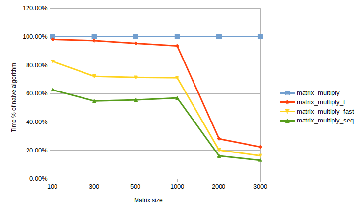

How Much Access to RAM Costs
Every computer program uses the main memory (RAM) to store data. RAM is considered to be fast storage compared even to the fastest NVMe SSD or 100Gbit network. It seems that the RAM speed is high enough and that is why no optimizations are required: just read or write any memory cell when the program needs it.
From the famous article What Every Programmer Should Know About Memory, I’d found that memory access is more tricky than I used to think about.
Modern CPUs have a small amount of blazing-fast internal memory — the registers. There is no delay when accessing data from the registers, the functional units can operate on this data directly. Each CPU core has its own registers, so the access time does not depend on the other cores’ load.
If there is no requested data in the CPU registers it should be loaded from the RAM to execute operations on it. Accessing the RAM is 10 times slower than accessing the registers, so the CPU has to request the data and wait a significant amount of time before it will be loaded into the registers. Also, there is a shared bus between the RAM and CPUs, that is why if one core actively access the RAM it can influence the accesses time for the other cores.
To reduce the average cost to access data from the main memory a mechanism called CPU cache was introduced. It’s a small amount of fast on-chip memory, which stores copies of the data from the RAM. An access time to the cache is much smaller than to the RAM. Most CPUs have a hierarchy of multiple cache levels (L1, L2, L3). Each next level of cache is bigger but slower.
Data is transferred from the RAM and stored in the cache in blocks of fixed size, called cache lines. When the CPU needs to read a location in memory, it first checks for a corresponding entry in the cache. If the requested data is not found in the cache, a cache miss is occurred. A cache miss is quite expensive because it requires not only to load new data from the memory into the cache but also to evict one of the existing entries. That is why one of the crucial software developer’s tasks is organizing memory access of the program in such a way that minimizes the number of cache misses.
Consider the practical task. Matrix multiplication is one of the most important matrix operations. It is used widely in such areas as machine learning or 3D graphics. For the huge matrices, the computations can take a lot of time, so the optimization of this operation can increase the speed of the whole program significantly.
The description of an algorithm can be easily found on Wikipedia.
The naive Plain C implementation looks like this:
void matrix_multiply(size_t sz, double **mul1, double **mul2, double **res) {
size_t i, j, k;
for (i = 0; i < sz; i++) {
for (j = 0; j < sz; j++) {
for (k = 0; k < sz; k++) {
res[i][j] += mul1[i][k] * mul2[k][j];
}
}
}
}
The function receives two square matrices mul1 and mul2 of size sz x sz and calculates their
multiplication into res. It’s expected, that res is initialized by zeros.
Assume the matrix of size 1000x1000. In this case, CPU cache can’t hold an entire matrix. In the
inner loop, the elements of mul1 are accessed sequentially, so it uses CPU cache effectively. For
the mul2 argument, the elements are accessed more-or-less randomly. For each element of the result
matrix, 1000 random elements should be retrieved from the RAM.
I got such measurements on my PC:
| matrix size | execution time in cycles |
|---|---|
| 100x100 | 733 |
| 300x300 | 21485 |
| 500x500 | 101610 |
| 1000x1000 | 843546 |
| 2000x2000 | 25787985 |
| 3000x3000 | 107763896 |
First optimization is a mul2 transposition:
void matrix_multiply_t(size_t sz, double **mul1, double **mul2, double **res) {
size_t i, j, k;
double tmp;
for (i = 0; i < sz; i++) {
for (j = i; j < sz; j++) {
tmp = mul2[i][j];
mul2[i][j] = mul2[j][i];
mul2[j][i] = tmp;
}
}
for (i = 0; i < sz; i++) {
for (j = 0; j < sz; j++) {
for (k = 0; k < sz; k++) {
res[i][j] += mul1[i][k] * mul2[j][k];
}
}
}
}
After mul2 transposition, it’s possible to access both arguments sequentially, so CPU cache is
used effectively. The function needs some time for the transposition operation that is why the
results can be similar to naive implementation for small input matrices.
The function modifies mul2 argument, that is why it can’t be used further. It’s possible to make a
copy of mul2, but in this case, the function requires additional memory, so the software developer
should decide what is the best option for the particular task.
The execution results:
| matrix size | execution time (cycles) | relative execution time |
|---|---|---|
| 100x100 | 719 | 98.09% |
| 300x300 | 20885 | 97.21% |
| 500x500 | 96832 | 95.30% |
| 1000x1000 | 788834 | 93.51% |
| 2000x2000 | 7268999 | 28.19% |
| 3000x3000 | 24179636 | 22.44% |
The second optimization is accessing data in such a way that utilizes CPU cache as much as possible without matrix transposition:
#define SM (CLS / sizeof(double))
void matrix_multiply_fast(size_t sz, double **mul1, double **mul2, double **res) {
size_t i, i2, j, j2, k, k2;
for (i = 0; i < sz; i += SM) {
for (j = 0; j < sz; j += SM) {
for (k = 0; k < sz; k += SM) {
size_t i2_max = MIN(SM, sz - i);
for (i2 = 0; i2 < i2_max; i2++) {
double *rres = res[i + i2] + j;
double *rmul1 = mul1[i + i2] + k;
size_t k2_max = MIN(SM, sz - k);
for (k2 = 0; k2 < k2_max; k2++) {
double *rmul2 = mul2[k + k2] + j;
size_t j2_max = MIN(SM, sz - j);
for (j2 = 0; j2 < j2_max; j2++) {
res[i + i2][j + j2] += mul1[i + i2][k + k2] * mul2[j + j2][k + k2];
}
}
}
}
}
}
}
The algorithm makes the same calculations as a naive implementation but in a different order. There
are six nested loops. The outer loops iterate with intervals of SM (the cache line size divided by
sizeof(double)). This divides the multiplication into several smaller problems which can be
handled with more cache locality. The inner loops iterate over the missing indexes of the outer
loops. k2 and j2 loops are in a different order because, in the actual computation, only one
expression depends on k2 but two depend on j2.
CLS macro is defined by the command getconf LEVEL1_DCACHE_LINESIZE during the compilation. This
command returns L1 cache line size, so it makes it possible for inner loops to utilize CPU cache
effectively.
The execution results:
| matrix size | execution time (cycles) | relative execution time |
|---|---|---|
| 100x100 | 606 | 82.67% |
| 300x300 | 15503 | 72.16% |
| 500x500 | 72558 | 71.41% |
| 1000x1000 | 600223 | 71.15% |
| 2000x2000 | 5203588 | 20.18% |
| 3000x3000 | 17501126 | 16.24% |
The most optimized version can be found in the article (p.50):
#define SM (CLS / sizeof(double))
void matrix_multiply_seq(size_t sz, double **mul1, double **mul2, double **res) {
size_t i, i2, j, j2, k, k2;
double *rres, *rmul1, *rmul2;
for (i = 0; i < sz; i += SM) {
for (j = 0; j < sz; j += SM) {
for (k = 0; k < sz; k += SM) {
size_t i2_max = MIN(SM, sz - i);
for (i2 = 0, rres = &res[i][j], rmul1 = &mul1[i][k]; i2 < i2_max; ++i2, rres += sz, rmul1 += sz) {
size_t k2_max = MIN(SM, sz - k);
for (k2 = 0, rmul2 = &mul2[k][j]; k2 < k2_max; ++k2, rmul2 += sz) {
size_t j2_max = MIN(SM, sz - j);
for (j2 = 0; j2 < j2_max; ++j2) {
rres[j2] += rmul1[k2] * rmul2[j2];
}
}
}
}
}
}
}
Compared to matrix_multiply_fast this function uses temp variables to hold intermediate values and
also uses += sz instruction to iterate over the matrices. As a result, the compilation produces
more compact machine code, so less instruction should be executed for each iteration.
This function requires data to be stored sequentially in the memory, so
mul1[i + 1][0] == (mul1[i] + sz)[0].
The execution results:
| matrix size | execution time (cycles) | relative execution time |
|---|---|---|
| 100x100 | 459 | 62.62% |
| 300x300 | 11773 | 54.80% |
| 500x500 | 56441 | 55.55% |
| 1000x1000 | 480246 | 56.93% |
| 2000x2000 | 4164429 | 16.15% |
| 3000x3000 | 14001852 | 12.99% |
From the results, it can be found that execution time does not differ a lot for small matrices, but as matrices become bigger the difference grows significantly, that is why the optimizations are worth implementing.

I run all examples on the machine with Intel Core i7-10700K processor and 3000 MHz DDR4 memory on Ubuntu 20.04 with gcc 9.3.0.
I’d uploaded the code I’d used into GitHub repo, so anyone can run it and measure an execution time on the different hardware.
Concluding, writing the code considering cache locality can increase the performance dramatically, but sometimes it can make the program harder to read and understand. As Donald Knuth had written in The Art of Computer Programming: “Premature optimization is the root of all evil”, so make such performance tuning if only it’s required.